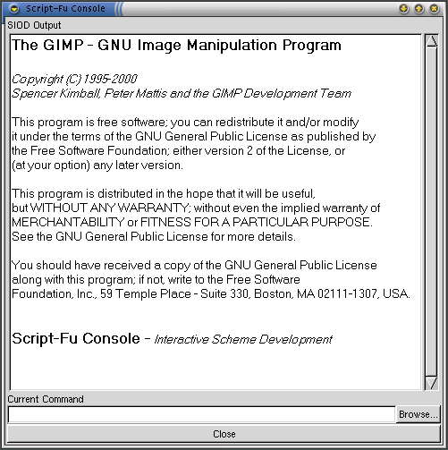
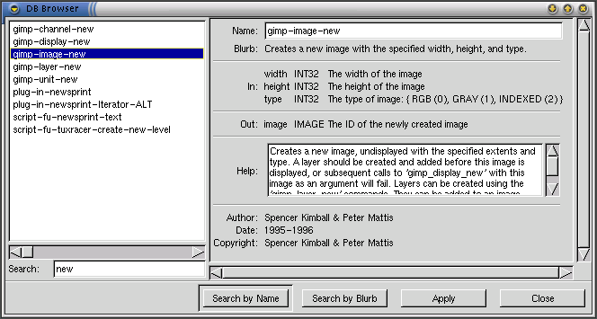
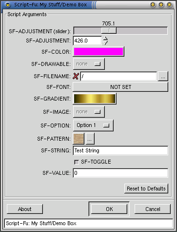

序文
紹介
Script-Fu への道の最初のステップ
Script-Fu コンソールでステップを再生
Script-Fu に書き下ろす
よくある落とし穴
返り値
R5SR 遵守
デバッギング
Script-Fu でできないこと
お手本
参考文献
変更履歴
この下のチュートリアルは The Gimp 1.1.24 のために書きました。ここで説明したいくつかの事柄は The Gimp 1.0.x では動作しないか違った動作になるでしょう。
これは Script-Fu プログラミングのちょっとしたチュートリアルです。Script-Fu の世界への手短な紹介と、基本的な動作はどのようなものなのかについて説明するつもりです。一歩ずつ進んで行って完全なスクリプトを作成します。目標は金属質の文字を作り出す、Script-Fu を手に入れることです。私が考えているのは、読者が Script-Fu で使用されるプログラミング言語、Sheme の基本的な知識を持つことです。
オーケー、それではまずはじめの一歩は、最初に Script-Fu で行いたいことを Gimp で普通に行います。これは重要なことで、なぜかといえば必要な操作とそれらを呼び出すべき順番を正確に知る必要があるからです。
それではテストの画像を作りましょう、最初に作成するのは新規画像 (ファイル->新規画像) で、これに何か文字を入れます、ここでは "Test" という文字にします。
そして文字を複製して上のレイヤーに metal グラデーションを適用します。
それから二番目の文字レイヤーを使って少しだけ拡大します、そうするためには、｢透明を選択領域に｣ 機能を使用してから、数ピクセルだけ選択領域を拡大します。そして選択領域を同じグラデーションで塗りつぶすのですが、ちょっと違う方向にしておきます。
最後に、レイヤーを結合して一般的なドロップシャドウを適用します。全部が終わったら、画像の要らない部分を取り除くために、画像を自動切り取りします。
よし、画像が思ったようになったので、要約しておこう、やった事はこれ:
この作業を Script-Fu コンソールで順番に再現します。これは Script-Fu コマンドの入力とそのテストができるという場所です。そしてこれは扱い難い全ての新規関数をテストしなきゃならない場所であり、あなたが書いたスクリプトを多少デバッグできる場所なのです。最初にコンソールで Script-Fu の全てのラインをテストするならこれは簡単で、もし期待通りにコマンドが動いたら、Script-Fu と平行して書き込みます。
そうするために、Script-Fu コンソール (拡張->Script-fu->コンソール) を開きます。コンソールが開いたら、右下の角の Browse... ボタンをクリックします、これは DB ブラウザを呼び出します。それは Script-Fu の中からアクセスできる、関数を検索できる場所です。関数の名前とともに、スクリプトが期待する引数の説明と関数が何を行うかの一般的な説明を手に入れることができます。
画像作成の最初のステップを再現する時がきたので、一つの新規画像を作成するための関数が必要です。DB ブラウザで見付かる関数のほとんどは Gimp のメニューにある名前と非常に似ています。"new" をちょっと検索してみると gimp-image-new の関数が見付かり、これが探しているものであるようです。コンソールの中へ次のように入力します:
(gimp-image-new 256 256 RGB)
すると下のような出力を得ます:
=> (gimp-image-new 256 256 RGB) (3)
最初の行は単なる実行コマンドコマンドで、次の行は関数の返り値です。DB ブラウザで読み取ることができるように、これは新しく作成した画像の id です。コンソールでは関数の引数として単に id を使うだけなのです。返り値は Script-Fu の旅での最初の落とし穴でもあります。これはとある要素が長いリストになっているのであり、一つの整数の値にはなっていません! そのためこの値を使うには、car でリストの最初の要素を取り出さなければならず、これは画像 id 3 を返すでしょう。
あなたは今不思議に思うかもしれません、そこで画像を作成してしまったのに、見ることができないようになっているよ。答えはこうです、画像を表示していない、だから画像はメモリの中にあるだけで、表示されていない、そのためこれの表示を作成する必要があります。そして (gimp-display-new 3) をやろうとしますが、エラーになってしまいます:
ERROR: Procedural database execution failed:
(gimp_display_new 3)
そう、これがまさに落とし穴です。Script-Fu の全ての関数ではありませんが、メニューと対応するような同じ行動を行います。ときどきそこにはさらに低レベルなものがあるため、期待する結果を得るために、さらに若干の作業をする必要があります。ここでの問題は、新しく作成した画像にレイヤーが全く無いということです。画像を表示するには、実際には少なくとも一枚のレイヤーが必要になります。それで次のステップはレイヤーを作成することです:
=> (gimp-layer-new 3 256 256 RGB-IMAGE "foobar" 100 NORMAL-MODE) (21)
定数 RGB-IMAGE と NORMAL-MODE は DB ブラウザで RGB_IMAGE と NORMAL_MODE として記載されていることに注意しましょう (アンダースコア '_' に注意)。Script-Fu の世界では全てのアンダースコアをマイナス '-' で置き換える必要があります。置換が正しいのか分からないのなら、コンソールの中に定数を入力してみましょう。
次のステップは DB ブラウザで説明したように、画像へ新しく作成したレイヤーにレイヤーを追加することです:
=> (gimp-display-new 3) (4)そしてついに画像を表示することができました:
=> (gimp-display-new 3) (4)
表示した画像はランダムな色で塗りつぶされているため、ちょっとぎこちなく見えるので、これらを消すために、現在の背景色でレイヤーを塗りつぶすことにします:
=> (gimp-drawable-fill 21 BG-IMAGE-FILL) ()
レイヤーを塗りつぶすための関数は gimp-drawable-fill を呼び出すのであり、あなたが予想していたであろう gimp-layer-fill ではありません。なぜならレイヤーは drawable だからです。そのためレイヤー操作の関数を検索するなら、drawable を操作するものも探さなければなりません。
画像セットアップをしました。速いですか? ならば最初の scheme を要約して書きましょう。はじめに全てを let* クラスにカプセル化して、そして let* クラスを関数本体に追加しました:
(define (my-make-new-image)
(let* ((image (car (gimp-image-new 256 256 RGB)))
(layer (car (gimp-layer-new image 256 256
RGB-IMAGE "foobar" 100 NORMAL-MODE))))
(gimp-drawable-fill layer BG-IMAGE-FILL)
(gimp-image-add-layer image layer 0)
(gimp-display-new image)
image))
scheme 関数の最後の行は返り値で、image がこの関数での返り値になります。
それから metal-text に戻り、文字列を追加してこれを試す必要があります。DB が呼び出す gimp-text-fontname をちょっと確認して下さい。呼び出すためにこう入力します:
=> (gimp-text-fontname 3 21 -1 0 "Foobar" 0 TRUE 25 PIXELS "-freefont-blippo-heavy-r-normal-*-24-*-*-*-p-*-iso8859-1") (33)
するとどうでしょう、新しく作成したレイヤーに文字がありますね。文字列 "-freefont-blippo-heavy-r-normal-*-24-*-*-*-p-*-iso8859-1" はあなたにとって黒魔術のように見えるかもしれませんが、後で簡単な作成方法が分かるでしょう。
(訳注: 黒魔術; black-magic とはこの場合、"-freefont-blippo-heavy-r-normal-*-24-*-*-*-p-*-iso8859-1" という文字列をいちいち手で入力するという難解なことを行っていることを指す。フォント選択ダイアログで手軽にフォントを選ぶ方法を後述してあります。)
そのレイヤーを複製する必要があるのですが、DB にはレイヤー複製の関数が無いことに気付くでしょう、そのため手作業でそれを行い、別の scheme 関数を記述する必要があります:
(define (my-duplicate-layer image layer)
(let* ((dup-layer (car (gimp-layer-copy layer 1))))
(gimp-image-add-layer image dup-layer 0)
dup-layer))
するとレイヤー複製の関数は:
=> (my-duplicate-layer 3 34) 41
次なるステップは拡大した文字境界のために若干の空間を追加することで、gimp-layer-resize が味方です:
(gimp-layer-resize 41 200 100 5 5)
これで動きますが、幅と高さはハードコード化されているので、よりいっそう柔軟な方法でもう一度挑戦します:
(define (my-layer-add-border layer border) (let* ((width (car (gimp-drawable-width layer))) (height (car (gimp-drawable-height layer)))) (gimp-layer-resize layer (+ width border) (+ height border) (/ border 2) (/ border 2))))
レイヤーのアルファチャンネルを選択領域に移し変えて数ピクセル大きくする必要があります:
(gimp-selection-layer-alpha 41) (gimp-selection-grow 3 5)
レイヤーを塗りつぶす前に、全ての透明な領域を透明に保つ、"透明保護" のフラグを取り除く必要があります:
(gimp-layer-set-preserve-trans 41 0)
グラデーションで選択領域を塗りつぶします:
(gimp-blend 41 CUSTOM NORMAL LINEAR 100 0 REPEAT-NONE FALSE 0 0 0 0 30 50)
ヒュー、ようやくこれで script-fu のための全ての準備が整って、細かい部分を取り付けるだけになりました。下のステップでいくつか必要無いものを取り去り、いくつかを追加します。
よおし、それではどのように Script-Fu を書きましょうか? そうね、基本的に三つのコトが必要ですね。スクリプトを書き下ろすファイル、それは ~/.gimp-1.1/scripts/ になくちゃいけない。全ての画像処理を行う関数もです。最後はスクリプトを Gimp 内部から見えるようにするために script-fu-register のコールを持つ必要がありますね。
中身が無い関数を書いて登録します。この下のコードを dummy.scm の中にコピー&ペーストして、上で説明したように ~/.gimp-1.1/scripts/ へ保存します。
(define (my-dummy-function a b) (print "Do nothing")) (script-fu-register "my-dummy-function" _"<Toolbox>/Xtns/Script-Fu/My Stuff/Dummy..." "Do nothing" "Joey User" "Joey User" "August 2000" "" SF-ADJUSTMENT _"Width" '(400 1 2000 1 10 0 1) SF-ADJUSTMENT _"Height" '(30 1 2000 1 10 0 1))
拡張->Scritp-fu->再読み込み を押すとスクリプトが Gimp に読み込まれてメニューからアクセスできるようになります。
注意点として、Script-Fu には 2 種類のスクリプトがあります。第一種は新規画像を作成するもので、メニュー 拡張->Scritp-fu->... を通ってアクセスできるものです。第二種は画像の Scritp-fu->... の右クリックポップアップメニューを通ってアクセスできるものです。第二種の Script-Fu を登録するために、<Image>/Script-Fu/... へパスを変更する必要があり、これは最初に SF-IMAGE と SF-DRAWABLE の型の引数を持つ必要があります。
これは次のトピックで取り上げますが、関数が取得できる引数には、以下の型があります:
| 引数型 | データ型 | 説明 |
|---|---|---|
| SF-IMAGE | 整数 (image id) | image id の取得に使う |
| SF-DRAWABLE | 整数 (drawable id) | drawable id を取得 |
| SF-VALUE | 文字列 | 数値の入力 |
| SF-TOGGLE | ブール (TRUE or FALSE) | ブール値の入力 |
| SF-PATTERN | 文字列 (パターン名) | パターンを選ばせる |
| SF-ADJUSTMENT | リスト (開始値 最小値 最大値 小さな増分 大きな増分 [整数=0 or 浮動=1] [スライダー=0 or ロールボックス=1]) | ある範囲内の値のスライドバーか入力ボックスを作成する |
| SF-FILENAME | 文字列 (パス名) | ファイルをブラウズさせる |
| SF-STRING | 文字列 | 入力ボックスの作成 |
| SF-FONT | 文字列 (フォント名) | フォントを選ばせる |
| SF-COLOR | リスト (赤 緑 青) [0-255] | 色を選ばせる |
| SF-OPTION | 文字列のリスト | リストから項目を選ばせる |
| SF-GRADIENT | 文字列 (グラデーション名) | グラデーションを選ばせる |
下のコードは全ての利用可能な入力型のボックスを作成します:
(define (my-demo-box value adj1 adj2 image drawable toggle pattern string font color option gradient)
(print "Do nothing"))
(script-fu-register "my-demo-box"
"<Toolbox>/Xtns/Script-Fu/My Stuff/Demo Box..."
"Do nothing"
"Joe User"
"Joe User"
"August 2000"
""
SF-ADJUSTMENT "SF-ADJUSTMENT (slider)" '( 30 1 2000 1 10 1 0)
SF-ADJUSTMENT "SF-ADJUSTMENT" '(400 1 2000 1 10 1 1)
SF-COLOR "SF-COLOR" '(255 0 255)
SF-DRAWABLE "SF-DRAWABLE" 0
SF-FONT "SF-FONT" ""
SF-GRADIENT "SF-GRADIENT" "Golden"
SF-IMAGE "SF-IMAGE" 0
SF-OPTION "SF-OPTION" '("Option 1" "Option 2" "Option 3")
SF-PATTERN "SF-PATTERN" "Wood"
SF-STRING "SF-STRING" "Test String"
SF-TOGGLE "SF-TOGGLE" TRUE
SF-VALUE "SF-VALUE" "0"
SF-FILENAME "SF-FILENAME" "/")
その結果、ボックスはこんな風になります:
それでは作業に戻って、Script-Fu のお手本を終わらせてしまいます。我々はフレームワークを始めたいので、必要な変数型を決める必要があります。フォントを作成したいときは、最初に文字が必要なので、SF-STRING を使用します。それからフォント選択のために SF-FONT に加えてフォントサイズを入力するため SF-VALUE を使用する必要があります。
script-fu-register の作成はユーザーのための練習問題として残しておきます。もし自分自身で挑戦したくないのなら完成したスクリプトを下の行で見ることができます。結果ボックスはこの様になって閉じるかもしれません。
現在レジスタコールのセットアップが整っており、関数をいくつかのコードで満たすことができます。はじめにファイルの上の方へ 2 つの補助関数 my-duplicate-layer と my-layer-add-border を挿入します。次は、多少の Script-Fu コンソールと一緒にコピー&ペーストします。関数の最後へ gimp-display-new コールを移動すると、画像描画作業がどうなったのかを見る必要がなくなります。最終的な画像を正しい大きさに切り取る、それ以外の補助関数を追加します。その結果、スクリプトはこのようなものだと思います:
(define (my-image-to-layer-size image layer)
(gimp-layer-set-offsets layer 0 0)
(gimp-image-resize image
(car (gimp-drawable-width layer))
(car (gimp-drawable-height layer))
0 0))
(define (my-layer-add-border layer border)
(let* ((width (car (gimp-drawable-width layer)))
(height (car (gimp-drawable-height layer))))
(gimp-layer-resize layer
(+ width border) (+ height border)
(/ border 2) (/ border 2))))
(define (my-duplicate-layer image layer)
(let* ((dup-layer (car (gimp-layer-copy layer 1))))
(gimp-image-add-layer image dup-layer 0)
dup-layer))
(define (my-make-metal-font text font font-size)
(let* ((image (car (gimp-image-new 256 256 RGB)))
(bottom-font-layer (car (gimp-text-fontname image -1 0 0 text 0 TRUE font-size PIXELS
font))))
(let* ((top-font-layer (my-duplicate-layer image bottom-font-layer)))
(my-layer-add-border bottom-font-layer 20)
(gimp-layer-set-preserve-trans bottom-font-layer 0)
(gimp-gradients-set-active "Four_bars")
(gimp-selection-layer-alpha bottom-font-layer)
(gimp-selection-grow image 3)
(gimp-blend bottom-font-layer CUSTOM NORMAL LINEAR 100 0 REPEAT-NONE FALSE 0 0 0 0 200 50)
(gimp-selection-layer-alpha top-font-layer)
(gimp-blend top-font-layer CUSTOM NORMAL LINEAR 100 0 REPEAT-NONE FALSE 0 0 0 50 200 0)
(gimp-selection-clear image)
(let* ((new-layer (car (gimp-image-merge-visible-layers
image EXPAND-AS-NECESSARY))))
(my-image-to-layer-size image new-layer))
(gimp-display-new image))
))
(script-fu-register "my-make-metal-font"
"<Toolbox>/Xtns/Script-Fu/Logos/Metal Font..."
"Create an example image of a custom gradient"
"Federico Mena Quintero"
"Federico Mena Quintero"
"June 1997"
""
SF-STRING "Text" "The GIMP"
SF-FONT "Font" "-*-blippo-*-r-*-*-24-*-*-*-p-*-*-*"
SF-VALUE "Font Size" "50" )
この下は Script-Fu でよくある落とし穴のリストです。
関数が値を返す時、それはリストというカプセルになっており、これがたった一つの値であるとか複数の値であるかということは重要ではありません。例えば gimp-color-picker が返す色のように、たとえ返り値がそれ自身リストであるのなら、返り値は常に追加リストのカプセルになっているでしょう。
もし複数の値が返されたなら、それもリストにあり、最初の値はリストの最初の要素で、その次は二番目のリスト要素です。だから正しい値を得るために常に car の呼び出しを行う必要があります。
R5SR は scheme 言語を説明した文書なのですが、嘆かわしいことに Gimp で使われている言語は R5SR 遵守ではなく、それほど近いわけでもありません。それは Gimp がその scheme インタープリタとして SIOD を使用するからなのです。SIOD は小規模な scheme 実装で、その位置付けは R5SR 関数の小規模なサブセットを規定しているだけで、いくつかはその他の名前を持っています。例えば display を持っておらず、print と呼ばれる関数があるだけです。Gimp でサポートしている scheme 関数の要約として、SIOD のウェブページを参照することができます。さらに悪いことに Gimp は SIOD のページでリストアップされている全ての関数すら規定していないのですが、これでも十分な出発点です。特定の関数を検索するためにコンソールで apropos 関数を使うこともできます:
=> (apropos "write") (fwrite writes swrite write-mask stroke-overwrite)
Script-Fu を扱い始めた時に、たとえそれに慣れたとしても、スクリプトが動かないという状態にとても頻繁に出くわすでしょう。深刻な場合ではエラーメッセージすら受け取らないでしょう。原因のほとんどの場合は単純なものですが、調査が困難です。下のステップは調査を簡単にするかもしれません。
最初のチェックはスクリプトが文法構成的に正しいかで、それは全ての開いた括弧とクォートを閉じているかということです。構文を強調、自動インデントと括弧を強調するエディタはそれの完成を手助けするでしょう。
次は、いくつかの返り値に car を追加するのを忘れてしまっているのかもしれません。そのエラーをチェックするために、コードを Script-Fu コンソールの中にコピー&ペーストしてそれを手動で呼び出してください。
ERROR: Invalid types specified for arguments
上は最も受け取る可能性が高いエラーメッセージです。もし他のエラーを受け取ったなら、あなたのバグは別のところにあるのもしれません。
少なすぎるか多すぎる引数で関数を呼び出したとき、下のエラーメッセージを受け取るでしょう:
=> (gimp-image-get-layers) ERROR: too few arguments (see errobj)
そうしたら素直に errobj を見てやれば、それは必要な引数と与えたものを教えてくれるでしょう。
=> (print errobj) ((image)) ()
最後に、関数がまだ動かなかったら、どこまでが正しく動いているのかをチェックするために適切な場所にいくつかの print コールを追加します。print の出力を見るためにコンソールで Script-Fu を実行しなければなりません。
今までは Script-Fu でできることを説明してきましたが、あなたが Script-Fu でできないものも、たくさんあるのです。
最初の、あなたが行いたいかもしれないことは関数が受け取る引数のためにより良いデフォルトの値を用意することです。悪い知らせはあなたがそれを行えないことで、Script-Fu レジスタコールに一定の値を渡すことができるだけなのです。だからデフォルトの値を、例えば画像の幅の半分になるようにするということは、そう簡単にそれをする事はできなくて、一定の値にしておかなければいけません。
あなたがやりたいかもしれないもう一つのことは SF-* によって用意されている GUI を後ろに持って行ったり、もう一度出したりと、GUI の並び順を変えることで、これもまた行うことができません。SF-* の値が Script-Fu から見込まれている、gui 全体なので、もしプレビューウィンドウのような、もっと複雑なものが必要なら、本当の Gimp プラグインを書かなければなりません。
ある時点でピクセルレベルでの画像処理に必要な、自分自身のフィルタやエフェクトを書きたくなるかもしれません。そのことを実際には Script-Fu で行えるのですが、Script-Fu の本質がインタープリタであるために、極端に遅くなるでしょう。そのため繰り返して言います、本当の Gimp プラグインとしてそれを書いたほうが良いです。
ディレクトリを開いてこの中の全ての画像を開きたいかもしれません。それさえ可能ではありません。SIOD ウェブページは opendir 関数を説明していますが、Script-Fu でそれをやろうとした時これは他の多くの SIOD 関数のようには動作しないでしょう。
=> (opendir "/") ERROR: unbound variable (errobj opendir)
これを解決するためにディレクトリの中身をファイルに落としてファイルの代わりに読み込んでこれの対策を行う必要があるか、Perl-Fu、Python-Fu や Gimp プラグインを書くことができます。
Gnome CVS レポジトリに gimple と呼ばれる、この問題のいくつかを修正するかもしれないプロジェクトが存在します。Gimple は Gimp のための Guile インターフェイスです。これは SIOD よりもさらに良い R5SR 遵守を持ち、多分より柔軟な gui-インターフェイスを創り出すことが可能な、guile-gtk を呼び出すことができるのですが、私はこのプロジェクトの状態を知らなくて、活動中なのか全く分かりません。
勉強のために海外の Script-Fu を見ておくことは常にグッドアイデアです。例題となる Script-Fu は Gimp ディレクトリの /usr/share/gimp/1.1/scripts/ で見付かります。Gimp ウェブページには他の Script-Fu サイトへのいくつかのリンクがあります。私は自分の Script-Fu もアップロードしており、それらはこちらで見付かりますが、注意して欲しいのは、そのほとんどはドキュメント化されておらず、いくつかは全く動作しないかもしれません。
$Log: script-fu-tut.html,v $
Revision 1.8 2001/01/24 21:13:26 ingo
Added link to japanese translation
$Log: script-fu-tut.html,v $
Revision 1.7 2000/08/15 23:57:21 ingo
Added some examples
Revision 1.6 2000/08/15 16:13:22 ingo
Added a describtion of SF-FILENAME
Revision 1.5 2000/08/15 16:06:41 ingo
* Some sentences about debugging with (print ...)
* Moved the changelog to the bottom of the page
Revision 1.4 2000/08/15 10:24:39 ingo
Added some infos about things you can't do in Script-Fu
Copyright (c) 2000 Ingo Ruhnke <grumbel@gmx.de>
Permission is granted to copy, distribute and/or modify this document under the terms of the GNU Free Documentation License, Version 1.1 or any later version published by the Free Software Foundation.
Last updated: $Date: 2001/01/24 21:13:26 $この文書は Ingo Ruhnke 氏の Script-fu Tutorial を私が邦訳したものです。この文書のライセンスについては GNU FDL をご覧下さい。もし翻訳の間違いがあることに気が付きましたら、指摘してもらえると幸いです。
$Log: script-fu-tut.html,v $
Revision 1.8a 2001/03/10 いっちー
* 1.8 に追従して変更
* 翻訳が変だったところを修正
$Log: script-fu-tut.html,v $
Revision 1.7a 2001/01/23 いっちー
* 最初の日本語版
* 1.7 を日本語に翻訳
Copyright (c) 2001 Iccii <iccii@hotmail.com> (Japanese Transrator)